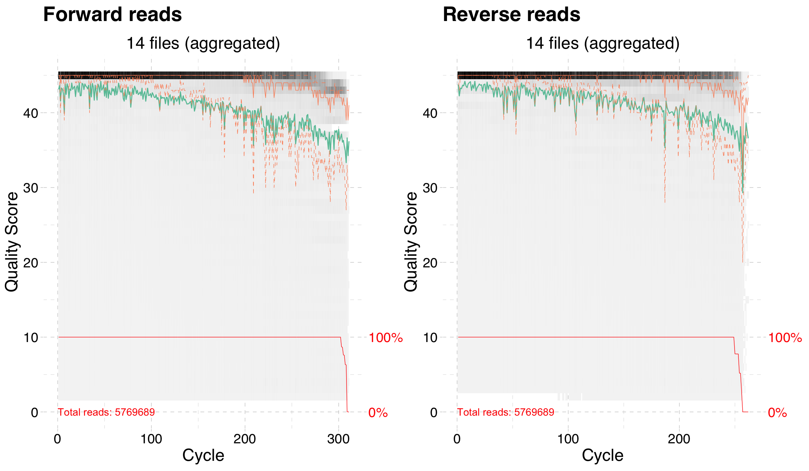
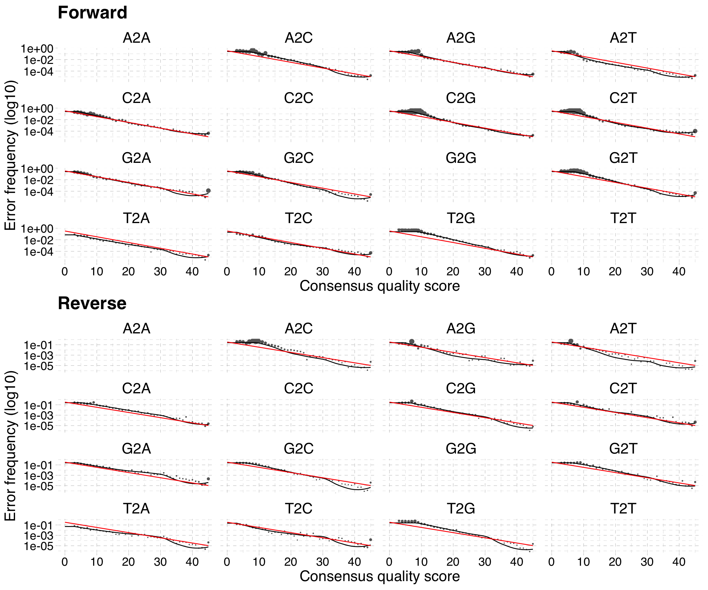
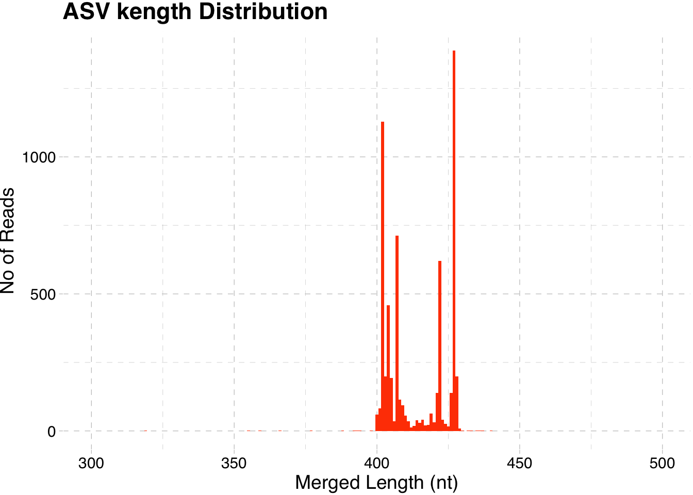
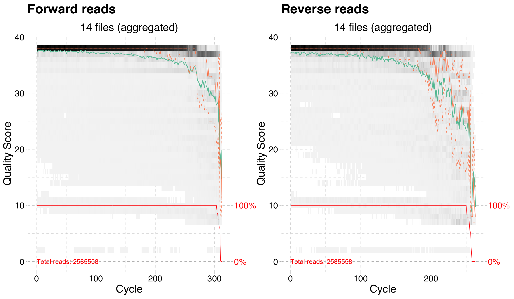
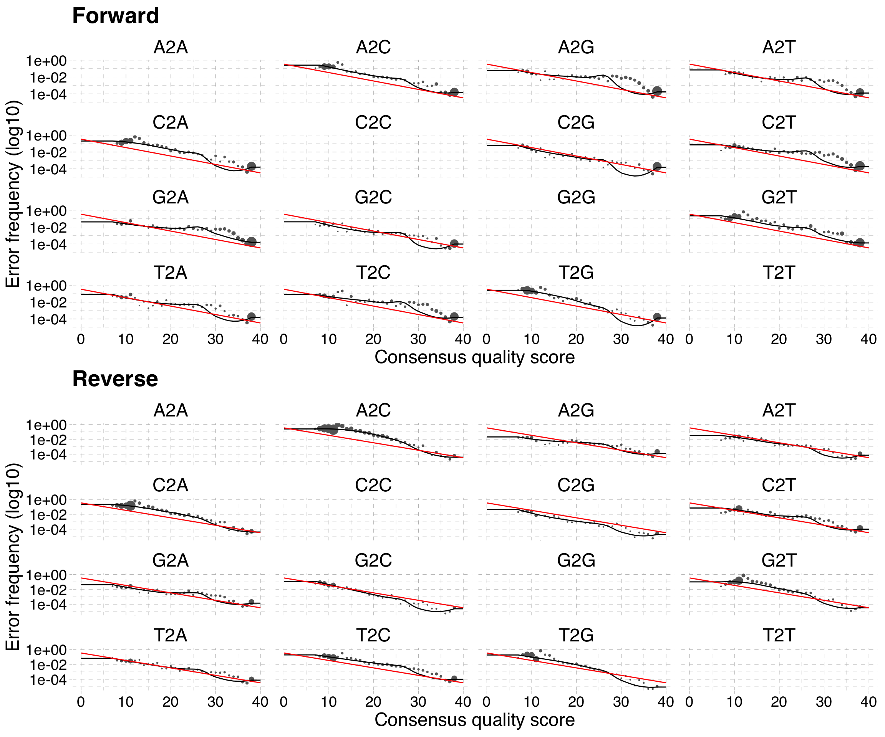
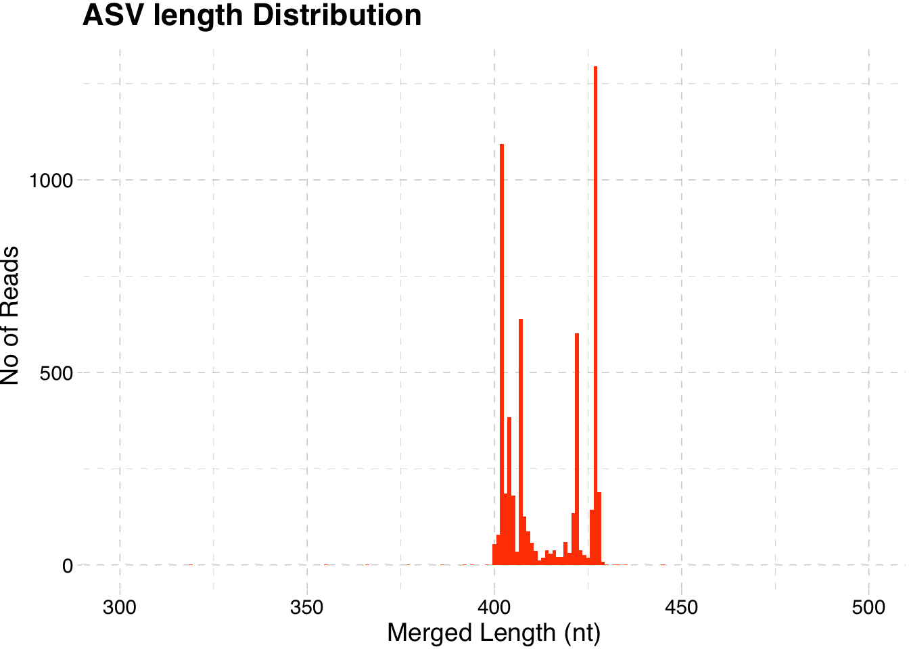
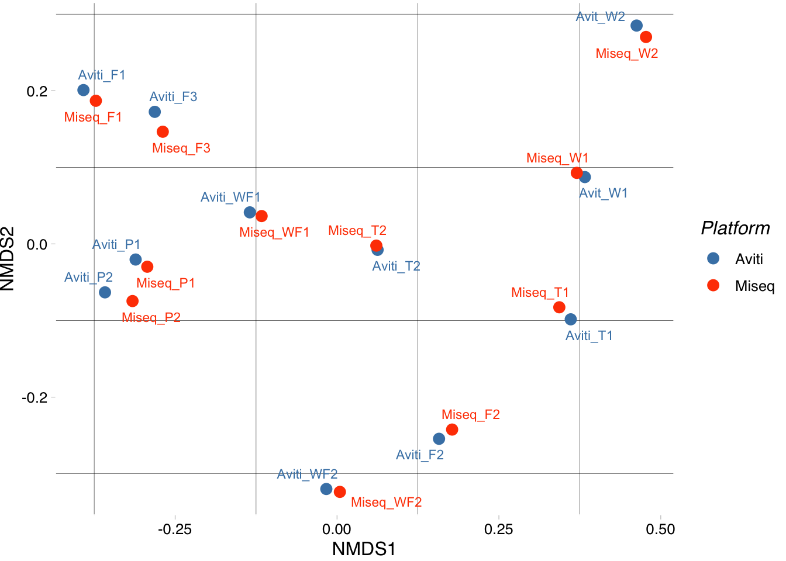
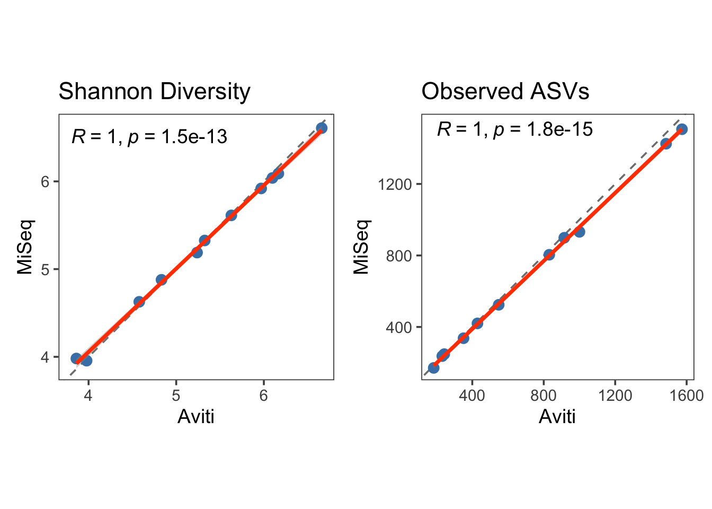
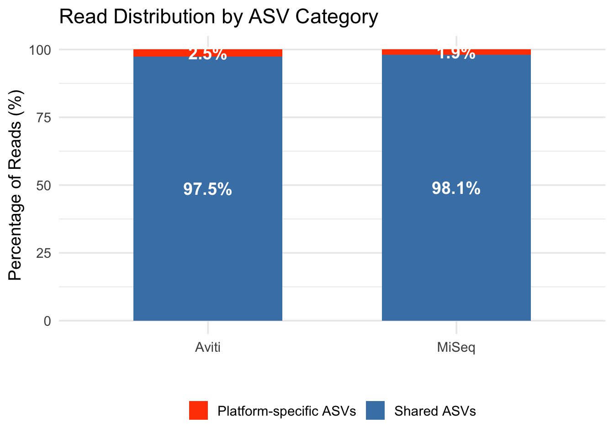
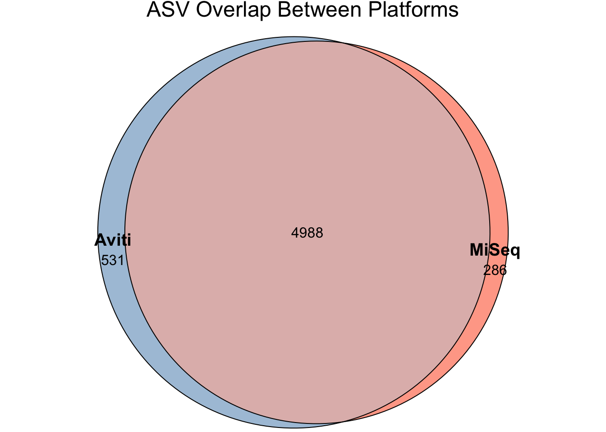

Dada2 pipeline for MiSeq and AVITI reads
The workflow is modified from “Dada2 pipeline guide” and “Bioconductor Workflow for Microbiome Data Analysis: from raw reads to community analyses” by Benjamin Callahan.
Read processing part will create separate result directories and files for Aviti and Miseq. Later ASV table are merged together, when data between two platforms are compared.
Prior dada2 processing, forward and reverse primers were trimmed with cutadapt.
Aviti read processing
File locations and variables
# Paths
aviti <- "aviti_reads/"
training <- "~/reference/silva_nr99_v138.2_toGenus_trainset.fa.gz"
species <- "~/reference/silva_v138.2_assignSpecies.fa.gz"
aviti_meta <- "aviti_metadata.tsv"
aviti_export <- "aviti_results/"
#Creates results directory
dir.create(aviti_export)
# Variables
truncation <- c(260,200)
phi <- TRUE
meta_1stcol <- "Sampleid"File and sample lists
#List files sequence files in source directory
list.files(aviti) [1] "A153-MITY_F1_TR1.fastq.gz" "A153-MITY_F1_TR2.fastq.gz"
[3] "A154-MITY_F2_TR1.fastq.gz" "A154-MITY_F2_TR2.fastq.gz"
[5] "A155-MITY_F3_TR1.fastq.gz" "A155-MITY_F3_TR2.fastq.gz"
[7] "A156-MITY_P1_TR1.fastq.gz" "A156-MITY_P1_TR2.fastq.gz"
[9] "A157-MITY_P2_TR1.fastq.gz" "A157-MITY_P2_TR2.fastq.gz"
[11] "A158-MITY_W1_TR1.fastq.gz" "A158-MITY_W1_TR2.fastq.gz"
[13] "A159-MITY_W2_TR1.fastq.gz" "A159-MITY_W2_TR2.fastq.gz"
[15] "A160-MITY_W3_TR1.fastq.gz" "A160-MITY_W3_TR2.fastq.gz"
[17] "A161-MITY_T1_TR1.fastq.gz" "A161-MITY_T1_TR2.fastq.gz"
[19] "A162-MITY_T2_TR1.fastq.gz" "A162-MITY_T2_TR2.fastq.gz"
[21] "A163-MITY_WF1_TR1.fastq.gz" "A163-MITY_WF1_TR2.fastq.gz"
[23] "A164-MITY_WF2_TR1.fastq.gz" "A164-MITY_WF2_TR2.fastq.gz"
[25] "A165-MITY_C1_TR1.fastq.gz" "A165-MITY_C1_TR2.fastq.gz"
[27] "A166-MITY_Neg_TR1.fastq.gz" "A166-MITY_Neg_TR2.fastq.gz"
[29] "filtered" # Forward read names: SAMPLENAME_TR1.fastq.gz
fnFwds <- sort(list.files(aviti, pattern = "_TR1.fastq",
full.names = TRUE))
# Reverse read names: SAMPLENAME_TR2.fastq.gz
fnRevs <- sort(list.files(aviti, pattern = "_TR2.fastq",
full.names = TRUE))
# Extract sample names to the list
sample.names <- sapply(strsplit(basename(fnFwds), "-"), `[`, 1)Read quality plots
Read quality from aggregated sequence data (200 000)
qfwd <- plotQualityProfile(fnFwds, aggregate = TRUE,
n = 2e05)
saveRDS(qfwd, file = paste0(aviti_export, "qfwd.rds"))
qrev <- plotQualityProfile(fnRevs, aggregate = TRUE,
n = 2e05)
saveRDS(qrev, file = paste0(aviti_export, "qrev.rds"))Plot forward and reverse read qualities. Data can be used to evaluate proper truncation length for filter and trim step.
qfwd <- readRDS(paste0(aviti_export, "qfwd.rds"))
qrev <- readRDS(paste0(aviti_export, "qrev.rds"))
qfwd <- qfwd + ggtitle("Forward reads") + theme_pander(base_size = 18)
qrev <- qrev + ggtitle("Reverse reads") + theme_pander(base_size = 18)
qfwd + qrev
Filter and trim reads
Create output lists for trim and filter function
# Filtered read files are placed in filtered subdirectory
filtFwds <- file.path(aviti, "filtered", paste0(sample.names,
"_F_filt.fastq.gz"))
filtRevs <- file.path(aviti, "filtered", paste0(sample.names,
"_R_filt.fastq.gz"))Execute the function
# Default parameters except truncLen and multithread
out <- filterAndTrim(fnFwds, filtFwds, fnRevs, filtRevs,
truncLen = truncation,
maxN = 0, maxEE = 2, truncQ = 2,
compress = TRUE, multithread = 8,
rm.phix = phi)
# Save output object to file
saveRDS(out, paste0(aviti_export, "out.rds"))Learn error rates
# Forward read error rate
errFwd <- learnErrors(filtFwds, multithread = 8, randomize = TRUE)
# Reverse read error rate
errRev <- learnErrors(filtRevs, multithread = 8, randomize = TRUE)
# save objects to files
saveRDS(errFwd, paste0(aviti_export, "errFwd.rds"))
saveRDS(errRev, paste0(aviti_export, "errRev.rds"))Plot error profiles
errFwd <- readRDS(paste0(aviti_export, "errFwd.rds"))
# Plot error rate profile for forward reads
plot_fwd <- plotErrors(errFwd, nominalQ=TRUE) + ggtitle ("Forward") +
theme_pander(base_size = 18)
errRev <- readRDS(paste0(aviti_export, "errRev.rds"))
# Plot error rate profile for reverse reads
plot_rev <- plotErrors(errRev, nominalQ=TRUE) + ggtitle("Reverse") +
theme_pander(base_size = 18)
plot_fwd/plot_rev
Denoise reads
# Denoise both forward and reverse reverse read using error rate profiles
dadaFwds <- dada(filtFwds, err = errFwd, multithread = 8)
dadaRevs <- dada(filtRevs, err = errRev, multithread = 8)
# Save objects to files
saveRDS(dadaFwds, paste0(aviti_export, "dadaFwds.rds"))
saveRDS(dadaRevs, paste0(aviti_export, "dadaRevs.rds"))Merge reads
dadaFwds <- readRDS(paste0(aviti_export, "dadaFwds.rds"))
dadaRevs <- readRDS(paste0(aviti_export, "dadaRevs.rds"))
# Merge denoised paired-end reads
merged <- mergePairs(dadaFwds, filtFwds, dadaRevs, filtRevs,
verbose = TRUE)
# Save object to a file
saveRDS(merged, paste0(aviti_export, "merged.rds"))Build ASV table
merged <- readRDS(paste0(aviti_export, "merged.rds"))
# Create sequence table. Rownames are sequences, colnames samples
seqtab <- makeSequenceTable(merged)
# Dimensions of ASV table
dim(seqtab)[1] 14 6516Remove chimeric variants
# Remove chimeras
seqtab.nochim <- removeBimeraDenovo(seqtab, method = "consensus", multithread = TRUE, verbose = TRUE)
# Dimensions
dim(seqtab.nochim)
# Save object to file
saveRDS(seqtab.nochim, paste0(aviti_export, "seqtabnochim.rds"))Plot ASV length distribution ( relative abundance is not accounted for).
seqtab.nochim <- readRDS(paste0(aviti_export, "seqtabnochim.rds"))
# Inspect sequence length distributions
asv_lengths <- data.frame(length = nchar(colnames(seqtab.nochim)))
# Plot histogram
ggplot(asv_lengths, aes(x = length)) +
geom_histogram(binwidth = 1, fill = "orangered") +
labs(title = "ASV kength Distribution",
x = "Merged Length (nt)",
y = "No of Reads") + xlim(300,500) +
theme_pander(base_size = 14)
A denoising summary table
# Read all objects from files
out <- readRDS(paste0(aviti_export, "out.rds"))
dadaFwds <- readRDS(paste0(aviti_export, "dadaFwds.rds"))
dadaRevs <- readRDS(paste0(aviti_export, "dadaRevs.rds"))
merged <- readRDS(paste0(aviti_export, "merged.rds"))
seqtab.nochim <- readRDS(paste0(aviti_export, "seqtabnochim.rds"))
# Get values for each sample
getN <- function(x) sum(getUniques(x))
track <- cbind(out, sapply(dadaFwds, getN), sapply(dadaRevs, getN),
sapply(merged, getN), rowSums(seqtab.nochim),
rowSums(seqtab.nochim != 0))
# If processing a single sample, remove the sapply calls: e.g.
# replace sapply(dadaFs, getN) with getN(dadaFs)
# Replace column names
colnames(track) <- c("Input", "Filtered", "DenoisedF", "DenoisedR",
"Merged", "Non-chimeric","Variants")
# Replace row names
rownames(track) <- sample.names
# Table
kable(track, format = "html") %>%
kable_styling(bootstrap_options = "striped")| Input | Filtered | DenoisedF | DenoisedR | Merged | Non-chimeric | Variants | |
|---|---|---|---|---|---|---|---|
| A153 | 591561 | 478305 | 477352 | 478109 | 459967 | 450737 | 1698 |
| A154 | 321204 | 264655 | 264324 | 264617 | 253606 | 250899 | 382 |
| A155 | 664599 | 525969 | 524602 | 525774 | 494739 | 483766 | 1597 |
| A156 | 532500 | 433267 | 432972 | 433063 | 416381 | 410790 | 967 |
| A157 | 599747 | 481750 | 480739 | 481533 | 468731 | 463346 | 1091 |
| A158 | 422882 | 294874 | 294819 | 294830 | 280157 | 275256 | 240 |
| A159 | 264889 | 220798 | 220564 | 220787 | 208447 | 207395 | 188 |
| A160 | 55601 | 44312 | 44293 | 44277 | 42934 | 42928 | 31 |
| A161 | 310866 | 216786 | 216630 | 216746 | 209419 | 208228 | 268 |
| A162 | 674269 | 535796 | 534905 | 535658 | 509770 | 504685 | 630 |
| A163 | 791536 | 614452 | 613752 | 614129 | 595589 | 588487 | 941 |
| A164 | 534436 | 426269 | 426023 | 426139 | 419326 | 416615 | 489 |
| A165 | 2746 | 2152 | 2122 | 2132 | 1999 | 1999 | 62 |
| A166 | 2853 | 1427 | 1418 | 1418 | 1418 | 1418 | 4 |
Assign taxonomy
seqtab.nochim <- readRDS(paste0(aviti_export, "seqtabnochim.rds"))
# Assign taxa up to genus level
taxa <- assignTaxonomy(seqtab.nochim, training, multithread = 10)
# Assign species that are perfectly matched
taxa <- addSpecies(taxa, species)
# Save object to a file
saveRDS(taxa, paste0(aviti_export, "taxa.rds"))TreeSummarizedExperiment object
The object can hold all necessary information needed for microbiome data analysis.
# Read project metadata file
samples_meta <- read_tsv(aviti_meta)
# Read representative sequences
taxa <- readRDS(paste0(aviti_export, "taxa.rds"))
repseq <- DNAStringSet(rownames(taxa))
# Modify taxonomy table
taxtable <- taxa
rownames(taxtable) <- paste0("ASV", seq(nrow(taxtable)))
colnames(taxtable) <- c("Kingdom", "Phylum", "Class", "Order", "Family",
"Genus", "Species")
# Modify counts table
assay_data <- seqtab.nochim
colnames(assay_data) <- paste0("ASV", seq(ncol(assay_data)))
# Confirm that order of samples is same in assay data and metadata!
rownames(assay_data) <- sample.names
assay_data <- t(assay_data)
# Tse object
tse <- TreeSummarizedExperiment(assays = list(counts = assay_data),
rowData = taxtable,
colData = samples_meta)
referenceSeq(tse) <- repseq
tseclass: TreeSummarizedExperiment
dim: 6055 14
metadata(0):
assays(1): counts
rownames(6055): ASV1 ASV2 ... ASV6054 ASV6055
rowData names(7): Kingdom Phylum ... Genus Species
colnames(14): A153 A154 ... A165 A166
colData names(8): Sampleid Sample_name ... DNA_concentration
Culture_result
reducedDimNames(0):
mainExpName: NULL
altExpNames(0):
rowLinks: NULL
rowTree: NULL
colLinks: NULL
colTree: NULL
referenceSeq: a DNAStringSet (6055 sequences)Removal of non-bacterial, mitochondrial and clhloroplastic ASV’s
# Filter ASV that are bacteria or archaea
tse <- tse[rowData(tse)$Kingdom %in% c("Bacteria", "Archaea")]
# Filter ASV that are not mitochondrial, keep emtpty
tse <- tse[rowData(tse)$Family != "Mitochondria" | is.na(rowData(tse)$Family)]
# Filter ASV that are not chloroplastic, keep empty
tse <- tse[rowData(tse)$Order != "Chloroplast" | is.na(rowData(tse)$Order)]
# Final dimensions
dim(tse)[1] 5599 14Write final object into files
# Save object
saveRDS(tse, (paste0(aviti_export,"tse.rds")))
# Save representative sequences as fasta
tse %>% referenceSeq() %>%
writeXStringSet(paste0(aviti_export,"repseq.fasta"),
append = FALSE, compress = FALSE,
format = "fasta")
# Save taxonomy table as tsv
taxfile <- as.data.frame(rowData(tse))
taxfile %>% rownames_to_column(var = "Variant") %>%
write_tsv(file = paste0(aviti_export, "taxonomy.tsv"))
# Save abundance table as tsv
ASV_counts <- as.data.frame(assays(tse)$counts)
ASV_counts %>% rownames_to_column(var= "Variant") %>%
write_tsv(file = paste0(aviti_export, "asv_table.tsv"))
# Save metadata as tsv
metadf <- data.frame(Sampleid = rownames(colData(tse)), colData(tse))
write_tsv(metadf, paste0(aviti_export, "metadata.tsv"))MiSeq read processing
File locations and variables
# Paths
miseq <- "miseq_reads/"
training <- "~/reference/silva_nr99_v138.2_toGenus_trainset.fa.gz"
species <- "~/reference/silva_v138.2_assignSpecies.fa.gz"
miseq_meta <- "miseq_metadata.tsv"
miseq_export <- "miseq_results/"
#Creates results directory
dir.create(miseq_export)
# Variables
truncation <- c(260,200)
phi <- TRUE
meta_1stcol <- "Sampleid"File and sample lists
#List source files
list.files(miseq) [1] "A001-MITY-F1_TR1.fastq.gz" "A001-MITY-F1_TR2.fastq.gz"
[3] "A002-MITY-F2_TR1.fastq.gz" "A002-MITY-F2_TR2.fastq.gz"
[5] "A003-MITY-F3_TR1.fastq.gz" "A003-MITY-F3_TR2.fastq.gz"
[7] "A004-MITY-P1_TR1.fastq.gz" "A004-MITY-P1_TR2.fastq.gz"
[9] "A005-MITY-P2_TR1.fastq.gz" "A005-MITY-P2_TR2.fastq.gz"
[11] "A006-MITY-W1_TR1.fastq.gz" "A006-MITY-W1_TR2.fastq.gz"
[13] "A007-MITY-W2_TR1.fastq.gz" "A007-MITY-W2_TR2.fastq.gz"
[15] "A008-MITY-W3_TR1.fastq.gz" "A008-MITY-W3_TR2.fastq.gz"
[17] "A009-MITY-T1_TR1.fastq.gz" "A009-MITY-T1_TR2.fastq.gz"
[19] "A010-MITY-T2_TR1.fastq.gz" "A010-MITY-T2_TR2.fastq.gz"
[21] "A011-MITY-WF1_TR1.fastq.gz" "A011-MITY-WF1_TR2.fastq.gz"
[23] "A012-MITY-WF2_TR1.fastq.gz" "A012-MITY-WF2_TR2.fastq.gz"
[25] "A013-MITY-C1_TR1.fastq.gz" "A013-MITY-C1_TR2.fastq.gz"
[27] "A014-MITY-Neg_TR1.fastq.gz" "A014-MITY-Neg_TR2.fastq.gz"
[29] "filtered" # Forward read names: SAMPLENAME_TR1.fastq
fnFwds <- sort(list.files(miseq, pattern = "_TR1.fastq",
full.names = TRUE))
# Reverse read names: SAMPLENAME_TR2.fastq
fnRevs <- sort(list.files(miseq, pattern = "_TR2.fastq",
full.names = TRUE))
# Extract sample names
sample.names <- sapply(strsplit(basename(fnFwds), "-"), `[`, 1)Read quality plots
Read quality from aggregated sequence data (200 000)
qfwd <- plotQualityProfile(fnFwds, aggregate = TRUE,
n = 2e05)
saveRDS(qfwd, file = paste0(miseq_export, "qfwd.rds"))
qrev <- plotQualityProfile(fnRevs, aggregate = TRUE,
n = 2e05)
saveRDS(qrev, file = paste0(miseq_export, "qrev.rds"))Plot forward and reverse read qualities. Data can be used to evaluate proper truncation length for filter and trim step.
qfwd <- readRDS(paste0(miseq_export, "qfwd.rds"))
qrev <- readRDS(paste0(miseq_export, "qrev.rds"))
qfwd <- qfwd + ggtitle("Forward reads") + theme_pander(base_size = 18)
qrev <- qrev + ggtitle("Reverse reads") + theme_pander(base_size = 18)
qfwd + qrev
Filter and trim reads
Create output lists for trim and filter function
# Filtered read files are placed in filtered subdirectory
filtFwds <- file.path(miseq, "filtered", paste0(sample.names,
"_F_filt.fastq.gz"))
filtRevs <- file.path(miseq, "filtered", paste0(sample.names,
"_R_filt.fastq.gz"))Execute the function
# Default parameters except truncLen and multithread
out <- filterAndTrim(fnFwds, filtFwds, fnRevs, filtRevs,
truncLen = truncation,
maxN = 0, maxEE = 2, truncQ = 2,
compress = TRUE, multithread = 8,
rm.phix = phi)
# Save output object to file
saveRDS(out, paste0(miseq_export, "out.rds"))Learn error rate profiles
# Forward read error rate
errFwd <- learnErrors(filtFwds, multithread = 8, randomize = TRUE)
# Reverse read error rate
errRev <- learnErrors(filtRevs, multithread = 8, randomize = TRUE)
# save objects to files
saveRDS(errFwd, paste0(miseq_export, "errFwd.rds"))
saveRDS(errRev, paste0(miseq_export, "errRev.rds"))Plot error profiles
errFwd <- readRDS(paste0(miseq_export, "errFwd.rds"))
# Plotting error rate profile for forward reads
plot_fwd <- plotErrors(errFwd, nominalQ=TRUE) + ggtitle ("Forward") +
theme_pander(base_size = 18)
errRev <- readRDS(paste0(miseq_export, "errRev.rds"))
# Plotting error rate profile for reverse reads
plot_rev <- plotErrors(errRev, nominalQ=TRUE) + ggtitle("Reverse") +
theme_pander(base_size = 18)
plot_fwd/plot_rev
Denoise reads
# Denoise both forward and reverse reverse read using error rate profiles
dadaFwds <- dada(filtFwds, err = errFwd, multithread = 8)
dadaRevs <- dada(filtRevs, err = errRev, multithread = 8)
# Save objects to files
saveRDS(dadaFwds, paste0(miseq_export, "dadaFwds.rds"))
saveRDS(dadaRevs, paste0(miseq_export, "dadaRevs.rds"))Merge reads
dadaFwds <- readRDS(paste0(miseq_export, "dadaFwds.rds"))
dadaRevs <- readRDS(paste0(miseq_export, "dadaRevs.rds"))
# Merge denoised paired-end reads
merged <- mergePairs(dadaFwds, filtFwds, dadaRevs, filtRevs,
verbose = TRUE)
# Save object to a file
saveRDS(merged, paste0(miseq_export, "merged.rds"))Build ASV table
merged <- readRDS(paste0(miseq_export, "merged.rds"))
# Create sequence table. Rownames are sequences, colnames samples
seqtab <- makeSequenceTable(merged)
# Dimensions of ASV table
dim(seqtab)[1] 14 6090Remove chimeric variants
seqtab.nochim <- removeBimeraDenovo(seqtab, method = "consensus",
multithread = TRUE, verbose = TRUE)
# Dimensions
dim(seqtab.nochim)
# Save object to a file
saveRDS(seqtab.nochim, paste0(miseq_export, "seqtabnochim.rds"))Plot ASV length distribution (relative abundance is not accounted for)
seqtab.nochim <- readRDS(paste0(miseq_export, "seqtabnochim.rds"))
# Inspect sequence length distributions
asv_lengths <- data.frame(length = nchar(colnames(seqtab.nochim)))
# Plot histogram
ggplot(asv_lengths, aes(x = length)) +
geom_histogram(binwidth = 1, fill = "orangered") +
labs(title = "ASV length Distribution",
x = "Merged Length (nt)",
y = "No of Reads") + xlim(300,500) +
theme_pander(base_size = 14)
A denoising summary table
# Read all objects from files
out <- readRDS(paste0(miseq_export, "out.rds"))
dadaFwds <- readRDS(paste0(miseq_export, "dadaFwds.rds"))
dadaRevs <- readRDS(paste0(miseq_export, "dadaRevs.rds"))
merged <- readRDS(paste0(miseq_export, "merged.rds"))
seqtab.nochim <- readRDS(paste0(miseq_export, "seqtabnochim.rds"))
# Get values for each sample
getN <- function(x) sum(getUniques(x))
track <- cbind(out, sapply(dadaFwds, getN), sapply(dadaRevs, getN),
sapply(merged, getN), rowSums(seqtab.nochim),
rowSums(seqtab.nochim != 0))
# If processing a single sample, remove the sapply calls: e.g.
# replace sapply(dadaFs, getN) with getN(dadaFs)
# Replace column names
colnames(track) <- c("Input", "Filtered", "DenoisedF", "DenoisedR",
"Merged", "Non-chimeric","Variants")
# Replace row names
rownames(track) <- sample.names
# Table
kable(track, format = "html") %>%
kable_styling(bootstrap_options = "striped")| Input | Filtered | DenoisedF | DenoisedR | Merged | Non-chimeric | Variants | |
|---|---|---|---|---|---|---|---|
| A001 | 243336 | 223101 | 222609 | 222687 | 221667 | 217243 | 1613 |
| A002 | 122554 | 112095 | 112029 | 112086 | 111976 | 110787 | 367 |
| A003 | 277046 | 253661 | 253184 | 253420 | 252177 | 247004 | 1520 |
| A004 | 201678 | 185475 | 185303 | 185366 | 185055 | 182953 | 940 |
| A005 | 240109 | 220104 | 219735 | 219897 | 219175 | 217148 | 1001 |
| A006 | 183994 | 168327 | 168247 | 168314 | 168137 | 164562 | 245 |
| A007 | 105474 | 94935 | 94878 | 94932 | 94807 | 94304 | 174 |
| A008 | 25390 | 23294 | 23283 | 23288 | 23281 | 23278 | 30 |
| A009 | 168375 | 154767 | 154722 | 154718 | 154578 | 153720 | 274 |
| A010 | 329110 | 301440 | 301159 | 301329 | 300433 | 297177 | 589 |
| A011 | 420801 | 384943 | 384113 | 384659 | 383100 | 377289 | 892 |
| A012 | 264561 | 243988 | 243859 | 243935 | 243447 | 241561 | 472 |
| A013 | 1494 | 1354 | 1313 | 1328 | 1281 | 1275 | 56 |
| A014 | 1636 | 1508 | 1504 | 1505 | 1504 | 1504 | 5 |
Assign taxonomy
seqtab.nochim <- readRDS(paste0(miseq_export, "seqtabnochim.rds"))
# Assign taxa up to genus level
taxa <- assignTaxonomy(seqtab.nochim, training, multithread = 10)
# Assign species that are perfectly matched
taxa <- addSpecies(taxa, species)
# Save object to a file
saveRDS(taxa, paste0(miseq_export, "taxa.rds"))TreeSummarizedExperiment object
# Read project metadata file
samples_meta <- read_tsv(miseq_meta)
# Read representative sequences
taxa <- readRDS(paste0(miseq_export, "taxa.rds"))
repseq <- DNAStringSet(rownames(taxa))
# Modify taxonomy table
taxtable <- taxa
rownames(taxtable) <- paste0("ASV", seq(nrow(taxtable)))
colnames(taxtable) <- c("Kingdom", "Phylum", "Class", "Order", "Family",
"Genus", "Species")
# Modify counts table
assay_data <- seqtab.nochim
colnames(assay_data) <- paste0("ASV", seq(ncol(assay_data)))
# Confirm that order of samples is same in assay data and metadata!
rownames(assay_data) <- sample.names
assay_data <- t(assay_data)
# Tse object
tse <- TreeSummarizedExperiment(assays = list(counts = assay_data),
rowData = taxtable,
colData = samples_meta)
referenceSeq(tse) <- repseq
tseclass: TreeSummarizedExperiment
dim: 5703 14
metadata(0):
assays(1): counts
rownames(5703): ASV1 ASV2 ... ASV5702 ASV5703
rowData names(7): Kingdom Phylum ... Genus Species
colnames(14): A001 A002 ... A013 A014
colData names(8): Sampleid Sample_name ... DNA_concentration
Culture_result
reducedDimNames(0):
mainExpName: NULL
altExpNames(0):
rowLinks: NULL
rowTree: NULL
colLinks: NULL
colTree: NULL
referenceSeq: a DNAStringSet (5703 sequences)Removal of non-bacterial, mitochondrial and clhloroplastic ASV’s
# Filter ASV that are bacteria or archaea
tse <- tse[rowData(tse)$Kingdom %in% c("Bacteria", "Archaea")]
# Filter ASV that are not mitochondrial, keep emtpty
tse <- tse[rowData(tse)$Family != "Mitochondria" | is.na(rowData(tse)$Family)]
# Filter ASV that are not chloroplastic, keep empty
tse <- tse[rowData(tse)$Order != "Chloroplast" | is.na(rowData(tse)$Order)]
# Final dimensions
dim(tse)[1] 5331 14Write final object into files
# Save object
saveRDS(tse, (paste0(miseq_export,"tse.rds")))
# Save representative sequences as fasta
tse %>% referenceSeq() %>%
writeXStringSet(paste0(miseq_export,"repseq.fasta"),
append = FALSE, compress = FALSE,
format = "fasta")
# Save taxonomy table as tsv
taxfile <- as.data.frame(rowData(tse))
taxfile %>% rownames_to_column(var = "Variant") %>%
write_tsv(file = paste0(miseq_export, "taxonomy.tsv"))
# Save abundance table as tsv
ASV_counts <- as.data.frame(assays(tse)$counts)
ASV_counts %>% rownames_to_column(var= "Variant") %>%
write_tsv(file = paste0(miseq_export, "asv_table.tsv"))
# Save metadata as tsv
metadf <- data.frame(Sampleid = rownames(colData(tse)), colData(tse))
write_tsv(metadf, paste0(miseq_export, "metadata.tsv"))Comparison between two sequencing platforms
In order to make direct comparison, it’s necessary to merge dada2 results.
# Platform specific sequence tables
aviti_seqtab <- readRDS("aviti_results/seqtabnochim.rds")
miseq_seqtab <- readRDS("miseq_results/seqtabnochim.rds")
# Join metadata
aviti_meta <- read_tsv("aviti_metadata.tsv")
miseq_meta <- read_tsv("miseq_metadata.tsv")
combined <- rbind(aviti_meta,miseq_meta)
# Replace Sampleid by Sample_name value
anames <- aviti_meta$Sample_name
mnames <- miseq_meta$Sample_name
rownames(aviti_seqtab) <- anames
rownames(miseq_seqtab) <- mnames
# Merge ASV tables
full_seqtab <- mergeSequenceTables(aviti_seqtab, miseq_seqtab)
# Reassign taxonmy
taxa <- assignTaxonomy(full_seqtab, training, multithread = 10)
taxa <- addSpecies(taxa, species)
# Representative sequences
repseq <- DNAStringSet(rownames(taxa))
# Taxonomy
taxtable <- taxa
rownames(taxtable) <- paste0("ASV", seq(nrow(taxtable)))
colnames(taxtable) <- c("Kingdom", "Phylum", "Class", "Order", "Family",
"Genus", "Species")
# Abundanes table
assay_data <- full_seqtab
colnames(assay_data) <- paste0("ASV",
seq(ncol(assay_data)))
# make sure that order of samples is same in assay data and metadata
rownames(assay_data) <- combined$Sample_name
assay_data <- t(assay_data)
# Tse object
full_tse <- TreeSummarizedExperiment(assays = list(counts = assay_data),
rowData = taxtable,
colData = combined)
referenceSeq(full_tse) <- repseq
# Filter non-bacterial variants
full_tse <- full_tse[rowData(full_tse)$Kingdom %in% c("Bacteria", "Archaea")]
full_tse <- full_tse[rowData(full_tse)$Family != "Mitochondria" |
is.na(rowData(full_tse)$Family)]
full_tse <- full_tse[rowData(full_tse)$Order != "Chloroplast" |
is.na(rowData(full_tse)$Order)]
# Dimensions
full_tse
# Save new object to a file
saveRDS(full_tse, "full_tse.rds")Basic statistics of the merged data set
full_tse <- readRDS("full_tse.rds")
# Dimensions
dim(full_tse)[1] 5889 28# Sample by platform
table(full_tse$Platform)
Aviti Miseq
14 14 # Read statistics
summary(colSums(assay(full_tse))) Min. 1st Qu. Median Mean 3rd Qu. Max.
398 92597 144402 155585 207707 408352 Rarefaction to 88000 reads. Step removes 3 samples from both platforms
# Set seed for reproducibility
set.seed(123)
# Rarefy data
tse_rar <- rarefyAssay(full_tse, min_size = 88000,
replace = FALSE, name = "counts2")Stress test indicates that 2D NMDS is a faithful representation of dissimilarity analysis results.
# Bray-Curtis dissimilarity
nmds <- metaMDS(t(assay(tse_rar, "counts2")), distance = "bray")Square root transformation
Wisconsin double standardization
Run 0 stress 0.08083425
Run 1 stress 0.09482953
Run 2 stress 0.0938446
Run 3 stress 0.09384451
Run 4 stress 0.09661411
Run 5 stress 0.08083426
... Procrustes: rmse 2.694851e-05 max resid 5.413506e-05
... Similar to previous best
Run 6 stress 0.09661414
Run 7 stress 0.1202968
Run 8 stress 0.09894866
Run 9 stress 0.09831597
Run 10 stress 0.09894866
Run 11 stress 0.08083425
... New best solution
... Procrustes: rmse 2.84408e-06 max resid 5.716252e-06
... Similar to previous best
Run 12 stress 0.1053973
Run 13 stress 0.0938444
Run 14 stress 0.08083425
... Procrustes: rmse 4.11207e-06 max resid 8.899759e-06
... Similar to previous best
Run 15 stress 0.08083863
... Procrustes: rmse 0.0006905038 max resid 0.00228603
... Similar to previous best
Run 16 stress 0.1205123
Run 17 stress 0.09894867
Run 18 stress 0.09482955
Run 19 stress 0.09482006
Run 20 stress 0.08083431
... Procrustes: rmse 0.0001190623 max resid 0.0002468189
... Similar to previous best
*** Best solution repeated 4 timesBray-Curtis NMDS plot between platforms maps same samples close to each other
# Extract NMDS scores (sites)
nmds_df <- as.data.frame(nmds$points)
# Add metadata (sample names & platform)
nmds_df$Sample_name <- colData(tse_rar)$Sample_name
nmds_df$Platform <- colData(tse_rar)$Platform
# Make sure grouping is factor
nmds_df$Platform <- factor(nmds_df$Platform, levels = c("Aviti", "Miseq"))
# Plot
ggplot(nmds_df, aes(MDS1, MDS2, color = Platform)) +
geom_point(size = 3) +
geom_text_repel(aes(label = Sample_name),
size = 3,
max.overlaps = Inf,
box.padding = 0.4,
point.padding = 0.3,
segment.alpha = 0.4) +
scale_color_manual(values = c("steelblue", "orangered")) +
theme_pander() +
theme(
legend.position = "right",
panel.grid = element_blank(),
text = element_text(size = 14)
) +
labs(x = "NMDS1", y = "NMDS2")
Permanova analysis
d <- vegdist(t(assay(tse_rar, "counts2")), method="bray")
adonis2(d ~ Platform, data = colData(tse_rar))Permutation test for adonis under reduced model
Permutation: free
Number of permutations: 999
adonis2(formula = d ~ Platform, data = colData(tse_rar))
Df SumOfSqs R2 F Pr(>F)
Model 1 0.0881 0.01392 0.2822 0.994
Residual 20 6.2439 0.98608
Total 21 6.3320 1.00000 # Check dispersion
bd <- betadisper(d, colData(tse_rar)$Platform)
permutest(bd)
Permutation test for homogeneity of multivariate dispersions
Permutation: free
Number of permutations: 999
Response: Distances
Df Sum Sq Mean Sq F N.Perm Pr(>F)
Groups 1 0.000134 0.0001343 0.0313 999 0.859
Residuals 20 0.085913 0.0042957 Analysis results:
R² = 0.014 Platform explains only about 1.4% of the variation in your microbial communities.
P-value = 0.993: This is not statistically significant.
Dispersion analysis p-value = 0.856.: Not significant and homogenuity requirements are fulfilled.
Alpha diversity results show perfect correlation between two platforms
# Calculate alpha diversity
alpha_div <- data.frame(
Sample_name = colData(tse_rar)$Sample_name,
Platform = colData(tse_rar)$Platform,
Shannon = diversity(t(assay(tse_rar, "counts2")), index = "shannon"),
Observed = colSums(assay(tse_rar, "counts2") > 0)
)
# Split sample_names by underscore
alpha_div$Sample_name <- sub(".*_", "", alpha_div$Sample_name)
# Split by platform
aviti_alpha <- alpha_div[alpha_div$Platform == "Aviti", ]
miseq_alpha <- alpha_div[alpha_div$Platform == "Miseq", ]
# Match samples by Sample_name
miseq_alpha <- miseq_alpha[match(aviti_alpha$Sample_name, miseq_alpha$Sample_name), ]
# Reshape for plotting
alpha_long <- rbind(
data.frame(Sample_name = aviti_alpha$Sample_name,
Platform = "Aviti",
Shannon = aviti_alpha$Shannon,
Observed = aviti_alpha$Observed),
data.frame(Sample_name = miseq_alpha$Sample_name,
Platform = "Miseq",
Shannon = miseq_alpha$Shannon,
Observed = miseq_alpha$Observed)
)
# Alpha diversity correlation
p5 <- ggplot(data.frame(Aviti = aviti_alpha$Shannon,
MiSeq = miseq_alpha$Shannon),
aes(x = Aviti, y = MiSeq)) +
geom_abline(slope = 1, intercept = 0, linetype = "dashed", color = "gray50") +
geom_point(size = 3, color = "steelblue") +
geom_smooth(method = "lm", se = TRUE, color = "orangered1") +
stat_cor(method = "pearson", label.x = 3.8, label.y = 6.5) +
theme_few(base_size = 14) +
labs(title = "Shannon Diversity", x = "Aviti", y = "MiSeq") +
coord_fixed()
p6 <- ggplot(data.frame(Aviti = aviti_alpha$Observed,
MiSeq = miseq_alpha$Observed),
aes(x = Aviti, y = MiSeq)) +
geom_abline(slope = 1, intercept = 0, linetype = "dashed", color = "gray50") +
geom_point(size = 3, color = "steelblue") +
geom_smooth(method = "lm", se = TRUE, color = "orangered") +
stat_cor(method = "pearson", label.x = 200, label.y = 1500) +
theme_few(base_size = 14) +
labs(title = "Observed ASVs", x = "Aviti", y = "MiSeq") +
coord_fixed()
p5 | p6
Shared and unique ASV’s between platforms
# Get abundance data
counts <- assay(tse_rar, "counts2")
# Identify samples by platform
aviti_samples <- which(tse_rar$Platform == "Aviti")
miseq_samples <- which(tse_rar$Platform == "Miseq")
# Get ASVs present in each platform (considering all samples)
aviti_asvs <- rownames(counts)[rowSums(counts[, aviti_samples] > 0) > 0]
miseq_asvs <- rownames(counts)[rowSums(counts[, miseq_samples] > 0) > 0]
# Identify platform-specific ASVs (MOVED HERE - MUST BE BEFORE USING THEM)
aviti_only <- setdiff(aviti_asvs, miseq_asvs)
miseq_only <- setdiff(miseq_asvs, aviti_asvs)
shared <- intersect(aviti_asvs, miseq_asvs)
# Print summary statistics
cat("\n=== ASV Distribution Summary ===\n")
=== ASV Distribution Summary ===cat("Total ASVs in Aviti:", length(aviti_asvs), "\n")Total ASVs in Aviti: 5519 cat("Total ASVs in MiSeq:", length(miseq_asvs), "\n")Total ASVs in MiSeq: 5274 cat("Shared ASVs:", length(shared), "\n")Shared ASVs: 4988 cat("Aviti-only ASVs:", length(aviti_only), "\n")Aviti-only ASVs: 531 cat("MiSeq-only ASVs:", length(miseq_only), "\n")MiSeq-only ASVs: 286 cat("Percentage shared:", round(length(shared)/length(union(aviti_asvs, miseq_asvs))*100, 1), "%\n\n")Percentage shared: 85.9 %# Calculate total abundance for each category
aviti_only_abundance <- sum(counts[aviti_only, aviti_samples])
miseq_only_abundance <- sum(counts[miseq_only, miseq_samples])
shared_abundance_aviti <- sum(counts[shared, aviti_samples])
shared_abundance_miseq <- sum(counts[shared, miseq_samples])
# Calculate totals per platform
total_aviti <- sum(counts[, aviti_samples])
total_miseq <- sum(counts[, miseq_samples])
# Add text summary
cat("\n=== Abundance Distribution ===\n\n")
=== Abundance Distribution ===cat("AVITI PLATFORM:\n")AVITI PLATFORM:cat(" Total reads:", format(total_aviti, big.mark = ","), "\n") Total reads: 968,000 cat(" Reads in shared ASVs:", format(shared_abundance_aviti, big.mark = ","),
sprintf("(%.2f%%)", shared_abundance_aviti/total_aviti * 100), "\n") Reads in shared ASVs: 943,420 (97.46%) cat(" Reads in Aviti-only ASVs:", format(aviti_only_abundance, big.mark = ","),
sprintf("(%.2f%%)", aviti_only_abundance/total_aviti * 100), "\n\n") Reads in Aviti-only ASVs: 24,580 (2.54%) cat("MISEQ PLATFORM:\n")MISEQ PLATFORM:cat(" Total reads:", format(total_miseq, big.mark = ","), "\n") Total reads: 968,000 cat(" Reads in shared ASVs:", format(shared_abundance_miseq, big.mark = ","),
sprintf("(%.2f%%)", shared_abundance_miseq/total_miseq * 100), "\n") Reads in shared ASVs: 949,334 (98.07%) cat(" Reads in MiSeq-only ASVs:", format(miseq_only_abundance, big.mark = ","),
sprintf("(%.2f%%)", miseq_only_abundance/total_miseq * 100), "\n\n") Reads in MiSeq-only ASVs: 18,666 (1.93%) # Create bar plot showing percentage breakdown
abundance_data <- data.frame(
Platform = rep(c("Aviti", "MiSeq"), each = 2),
Category = rep(c("Shared ASVs", "Platform-specific ASVs"), 2),
Percentage = c(
shared_abundance_aviti/total_aviti * 100,
aviti_only_abundance/total_aviti * 100,
shared_abundance_miseq/total_miseq * 100,
miseq_only_abundance/total_miseq * 100
),
Reads = c(
shared_abundance_aviti,
aviti_only_abundance,
shared_abundance_miseq,
miseq_only_abundance
)
)
p1 <- ggplot(abundance_data, aes(x = Platform, y = Percentage, fill = Category)) +
geom_bar(stat = "identity", position = "stack", width = 0.6) +
scale_fill_manual(values = c("Shared ASVs" = "steelblue",
"Platform-specific ASVs" = "orangered")) +
geom_text(aes(label = sprintf("%.1f%%", Percentage)),
position = position_stack(vjust = 0.5),
color = "white", size = 5, fontface = "bold") +
labs(title = "Read Distribution by ASV Category",
y = "Percentage of Reads (%)",
x = "") +
theme_minimal(base_size = 14) +
theme(legend.position = "bottom",
legend.title = element_blank())
print(p1)
# Create Euler diagram for ASV comparison
count_fit <- euler(c(
"Aviti" = length(aviti_only), # ASVs unique to Aviti
"MiSeq" = length(miseq_only), # ASVs unique to MiSeq
"Aviti&MiSeq" = length(shared) # ASVs shared between both
))
# Plot with custom colors
plot(count_fit,
fills = list(fill = c("steelblue", "orangered"), alpha = 0.5),
quantities = TRUE,
labels = list(cex = 1.2),
main = "ASV Overlap Between Platforms")
# Function to create detailed table for platform-specific ASVs
create_platform_table <- function(asv_list, platform_name, tse_obj, platform_samples) {
if(length(asv_list) == 0) {
return(data.frame(Message = paste("No", platform_name, "-specific ASVs found")))
}
# Get taxonomy and abundance data
tax_data <- as.data.frame(rowData(tse_obj)[asv_list, ])
counts_data <- assay(tse_obj, "counts2")[asv_list, platform_samples,
drop = FALSE]
# Calculate statistics
result <- data.frame(
ASV = asv_list,
tax_data,
Total_Reads = rowSums(counts_data),
Mean_Abundance = rowMeans(counts_data),
Max_Abundance = apply(counts_data, 1, max),
N_Samples = rowSums(counts_data > 0),
stringsAsFactors = FALSE
)
# Sort by total reads (descending)
result <- result[order(-result$Total_Reads), ]
return(result)
}
# Create tables for platform-specific ASVs
aviti_table <- create_platform_table(aviti_only, "Aviti", tse_rar, aviti_samples)
miseq_table <- create_platform_table(miseq_only, "MiSeq", tse_rar, miseq_samples)
# Analyze abundance of platform-specific ASVs
cat("\n\n=== Abundance Analysis of Platform-Specific ASVs ===\n\n")
=== Abundance Analysis of Platform-Specific ASVs ===total_aviti_reads <- sum(counts[, aviti_samples])
total_miseq_reads <- sum(counts[, miseq_samples])
aviti_specific_reads <- sum(aviti_table$Total_Reads)
miseq_specific_reads <- sum(miseq_table$Total_Reads)
abundance_summary <- data.frame(
Platform = c("Aviti", "MiSeq"),
Platform_Specific_ASVs = c(length(aviti_only), length(miseq_only)),
Total_Reads_in_Specific = c(aviti_specific_reads, miseq_specific_reads),
Percent_of_Total_Reads = c(
round(aviti_specific_reads/total_aviti_reads * 100, 2),
round(miseq_specific_reads/total_miseq_reads * 100, 2)
)
)
kable(abundance_summary, format = "html") %>%
kable_styling(bootstrap_options = "striped")| Platform | Platform_Specific_ASVs | Total_Reads_in_Specific | Percent_of_Total_Reads |
|---|---|---|---|
| Aviti | 531 | 24580 | 2.54 |
| MiSeq | 286 | 18666 | 1.93 |
# Save full tables to files
write_tsv(aviti_table, "aviti_only_asvs.tsv")
write_tsv(miseq_table, "miseq_only_asvs.tsv")Finally, we calculate platform-specific ASVs after removing rare variants (n<100).
# Filter ASVs with total abundance < 10 across all samples
counts <- assay(tse_rar, "counts2")
abundant_asvs <- rownames(counts)[rowSums(counts) >= 100]
# Recalculate platform-specific ASVs with filtered data
aviti_asvs_filt <- abundant_asvs[rowSums(counts[abundant_asvs, aviti_samples] > 0) > 0]
miseq_asvs_filt <- abundant_asvs[rowSums(counts[abundant_asvs, miseq_samples] > 0) > 0]
shared_filt <- intersect(aviti_asvs_filt, miseq_asvs_filt)
aviti_only_filt <- setdiff(aviti_asvs_filt, miseq_asvs_filt)
miseq_only_filt <- setdiff(miseq_asvs_filt, aviti_asvs_filt)
# Compare results
cat("=== Before filtering (all ASVs) ===\n")=== Before filtering (all ASVs) ===cat("Shared:", length(shared), "\n")Shared: 4988 cat("Aviti-only:", length(aviti_only), "\n")Aviti-only: 531 cat("MiSeq-only:", length(miseq_only), "\n")MiSeq-only: 286 cat("Percent shared:", round(length(shared)/length(union(aviti_asvs, miseq_asvs))*100, 1), "%\n\n")Percent shared: 85.9 %cat("=== After filtering (total abundance >= 100) ===\n")=== After filtering (total abundance >= 100) ===cat("Shared:", length(shared_filt), "\n")Shared: 2504 cat("Aviti-only:", length(aviti_only_filt), "\n")Aviti-only: 30 cat("MiSeq-only:", length(miseq_only_filt), "\n")MiSeq-only: 37 cat("Percent shared:", round(length(shared_filt)/length(union(aviti_asvs_filt, miseq_asvs_filt))*100, 1), "%\n")Percent shared: 97.4 %After filtering rare variants, >90% of platform-specific variants were removed. This further supports the hypothesis that both platforms yield nearly identical results. It is also worth noting that a single nucleotide difference will render sequences as distinct ASVs.